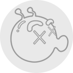

    <ion-view view-title="个人中心">
    <ion-nav-buttons side="left">
          <a class="icon-back-btn" ng-click="$ionicGoBack();"></a>
        </ion-nav-buttons>
        <ion-content scroll="false" style="background:#eee;">
        	<div style="background:#ffdd2a;">
        		<div class="row">
    	            <div class="col">
    	                
    	                <div class="brief">{{userInfo.nickname || '-'}}</div>
    	                <div class="brief" style="font-size:0.6rem;font-weight: none;">{{userInfo.summary || '&nbsp;'}}</div>
    	            </div>
            	</div>
        	</div>
            <ion-list>
                <div class="item item-divider divider-small no-border"></div>
                <ion-item class="item-icon-right no-border" ng-href="#/collect/content/{{userInfo.ids}}/1">
                    <span>收藏的内容</span>
                    <i class="icon icon-axibar-forward"></i>
                </ion-item>
                <hr class="a-hr">
                <ion-item class="item-icon-right no-border" ng-href="#/collect/channel/{{userInfo.ids}}/1">
                    <span>收藏的频道</span>
                    <i class="icon icon-axibar-forward"></i>
                </ion-item>
                <span ng-if="paras.self == 1">
                <div  class="item item-divider divider-small no-border"></div>
                <ion-item class="item-icon-right no-border" href="#/feedback">
                    <span>意见反馈</span>
                    <i class="icon icon-axibar-forward"></i>
                </ion-item>
                <hr class="a-hr">
                <ion-item class="item-icon-right no-border" href="#/setting">
                    <span>功能设置</span>
                    <i class="icon icon-axibar-forward"></i>
                </ion-item>
                <div ng-if="storage.user" class="item item-divider divider-small no-border"></div>
                <button ng-if="storage.user" class="button button-full button-light no-margin" ng-click="exitLogin()">退出登录</button>
                </span>
            </ion-list>
        </ion-content>
</ion-view>